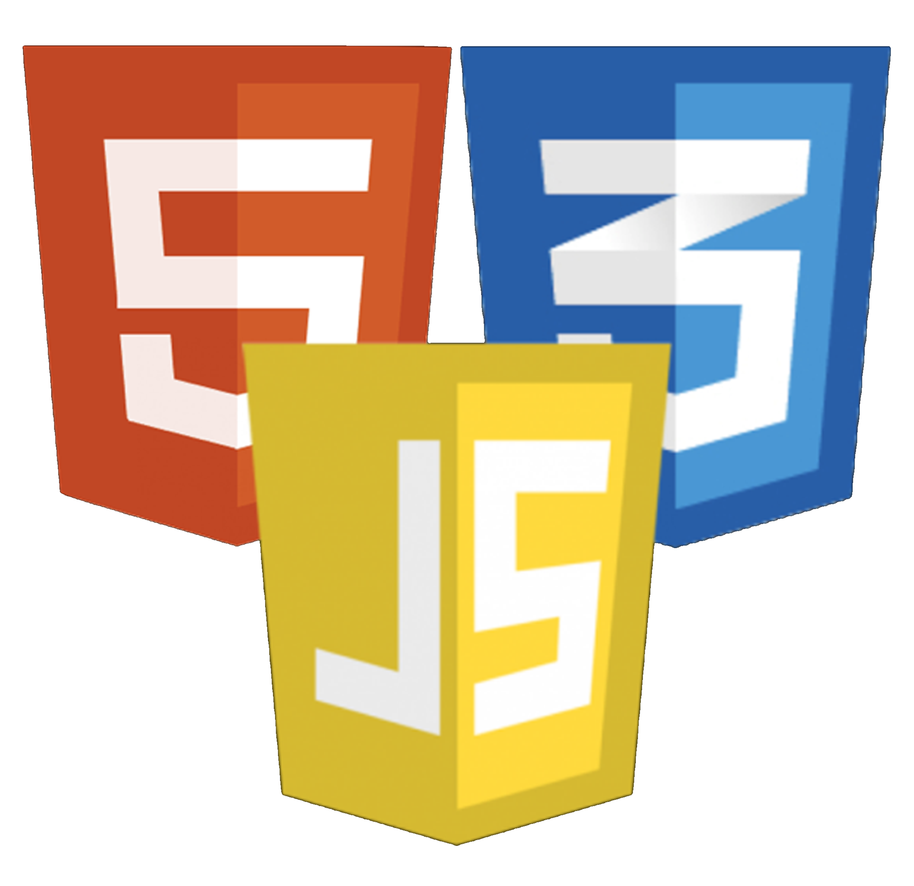
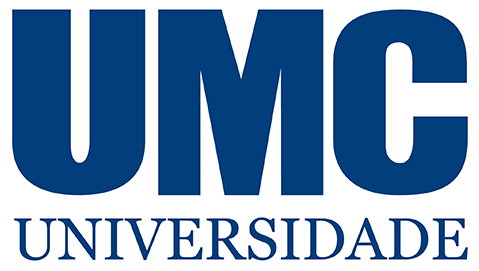

Objetivo Profissional
Profissional com experiência em atendimento, vendas, gestão e personalização de produtos. Busco oportunidades em ambientes dinâmicos para aplicar minhas habilidades e contribuir com meu comprometimento e dedicação.
Ferramentas & Tecnologias


Experiência Profissional
Twister Games Ltda (Set/2021 - Jun/2024)
Subgerente (Out/2023 - Jun/2024)
- Gestão das operações da loja e da equipe
- Controle de caixa e emissão de notas fiscais
- Marketing nas redes sociais
Caixa (Set/2021 - Out/2023)
- Transações financeiras, atendimento e organização da loja
- Design de canecas personalizadas e marketing digital
I Love Bubble Waffle Ltda (Jan/2019 - Mar/2020)
- Produção de sobremesas, atendimento ao cliente
- Organização e limpeza conforme normas da ANVISA
Rbrasil Soluções S.A (Mai/2017 - Ago/2017)
- Negociação de dívidas e acordos com clientes
- Gestão de contas em atraso e resolução de conflitos
Poartec Serviço e Comércio Ltda (Jan/2016 - Jan/2017)
- Atendimento e venda de produtos de ar-condicionado
- Emissão de notas fiscais e atendimento técnico
Call Tecnologia (Jan/2015 - Nov/2015)
- Atendimento 156, registro de chamados e suporte
- Encaminhamento e acompanhamento de solicitações
Formação Acadêmica
- Universidade Mogi das Cruzes
Análise e Desenvolvimento de Sistemas 06/2024 – Cursando
Habilidades
- Atendimento ao cliente
- Gestão de equipe
- Python (Tkinter)
- Photoshop (canecas personalizadas)
- Marketing digital
- Emissão de notas fiscais